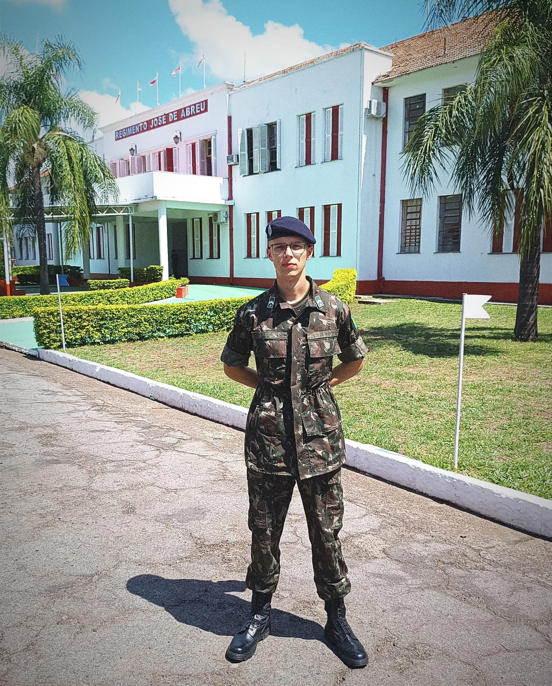
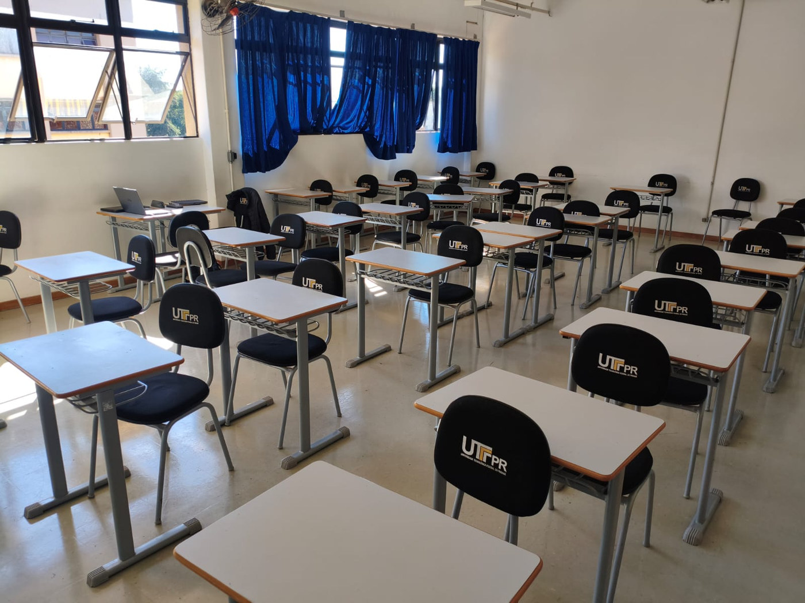
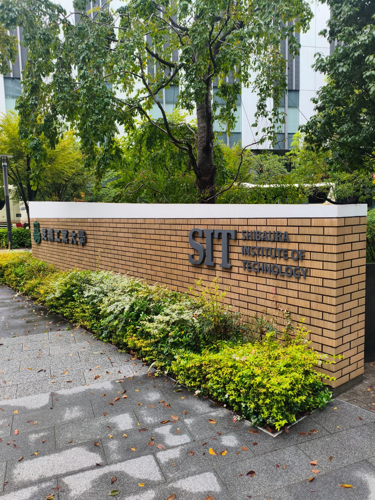

Online e ao vivo
Encontros individuais de 1 hora, com explicações em tempo real e espaço para perguntas.
Aprenda Cálculo, Física e Matemática com quem conquistou nota 10 nas disciplinas mais exigentes da Engenharia. Aulas práticas, explicações claras e um plano de estudos construído para suas dificuldades.
Quero meu plano de estudos →Aulas individuais a partir de R$ 60/hora
Com Gustavo Schlichta · Engenharia Civil UTFPR
Cada aluno tem uma base, um ritmo e um objetivo diferentes. As aulas são planejadas a partir do que você realmente precisa aprender.
Encontros individuais de 1 hora, com explicações em tempo real e espaço para perguntas.
Conteúdo baseado nas suas listas, provas anteriores e tópicos mais difíceis.
Resumo após cada encontro e materiais para continuar estudando.
Suporte entre as aulas para dúvidas pontuais e orientação.
Conteúdos prioritários e frequência sugerida até a próxima prova.
Explicações objetivas, exemplos resolvidos e exercícios progressivos.
Valores individuais e pacotes a combinar pelo WhatsApp.
Ensino médio, graduação em Exatas ou disciplinas específicas de Engenharia Civil. Selecione a trilha para conhecer as matérias e resultados relacionados.
Do reforço dos fundamentos à resolução de problemas universitários, com abordagem adaptada ao seu nível.
Limites, derivadas, integrais, séries, funções de várias variáveis e cálculo vetorial.
Mecânica, energia, oscilações, eletricidade, magnetismo e ondas.
Matrizes, sistemas lineares, espaços vetoriais e autovalores.
Vetores, retas, planos, distâncias e cônicas.
EDOs de primeira e segunda ordem e métodos de resolução.
Matemática e Física para ensino médio com revisão e exercícios.
Três caminhos de aprendizagem. Uma metodologia individualizada, com resultados que demonstram dedicação às Exatas e à Engenharia.
Da preparação para vestibulares às disciplinas universitárias, aulas com atenção às suas dificuldades.



Explore as disciplinas e receba uma primeira sugestão de estudo.
Quero meu plano de estudos →Engenharia Civil · UTFPR
Intercâmbio acadêmico · Japão
Sou estudante de Engenharia Civil da UTFPR, atualmente no 7º período e em intercâmbio acadêmico no Shibaura Institute of Technology, no Japão. Minha proposta é ajudar você a compreender a lógica dos exercícios, em vez de apenas memorizar fórmulas.
Responda às perguntas e receba uma sugestão inicial de plano de estudos criada a partir das suas dificuldades, objetivos e prazo. Sem compromisso.
Uma proposta inicial construída a partir das suas respostas.
Seu diagnóstico é gerado neste dispositivo. As respostas só são enviadas quando você confirma a mensagem no WhatsApp.